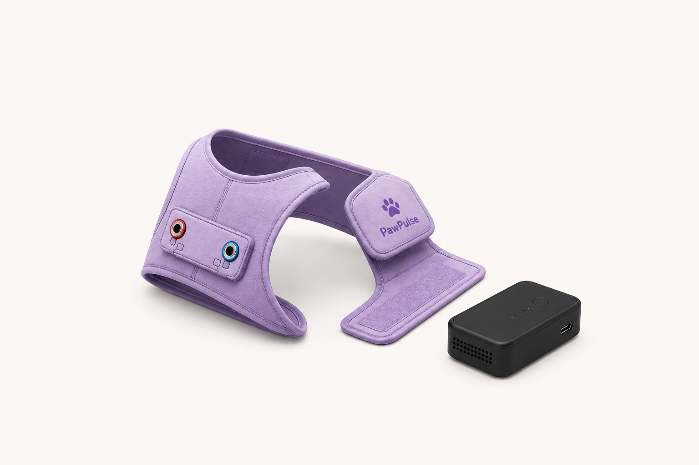
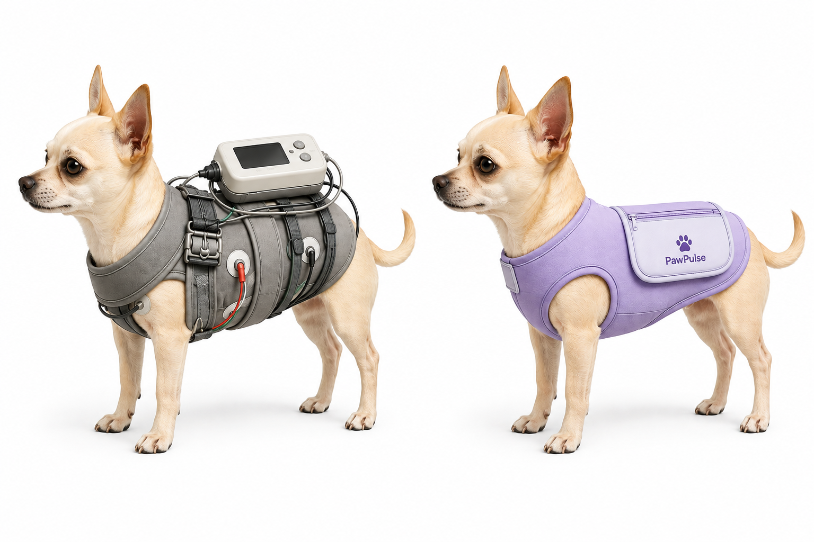
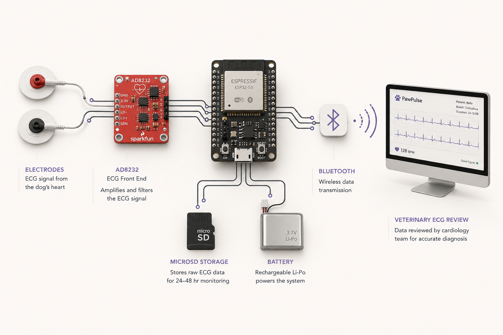
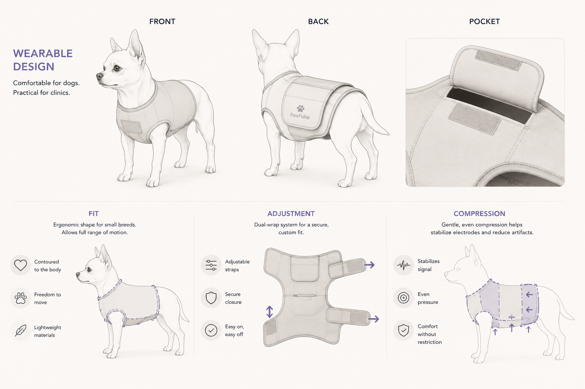
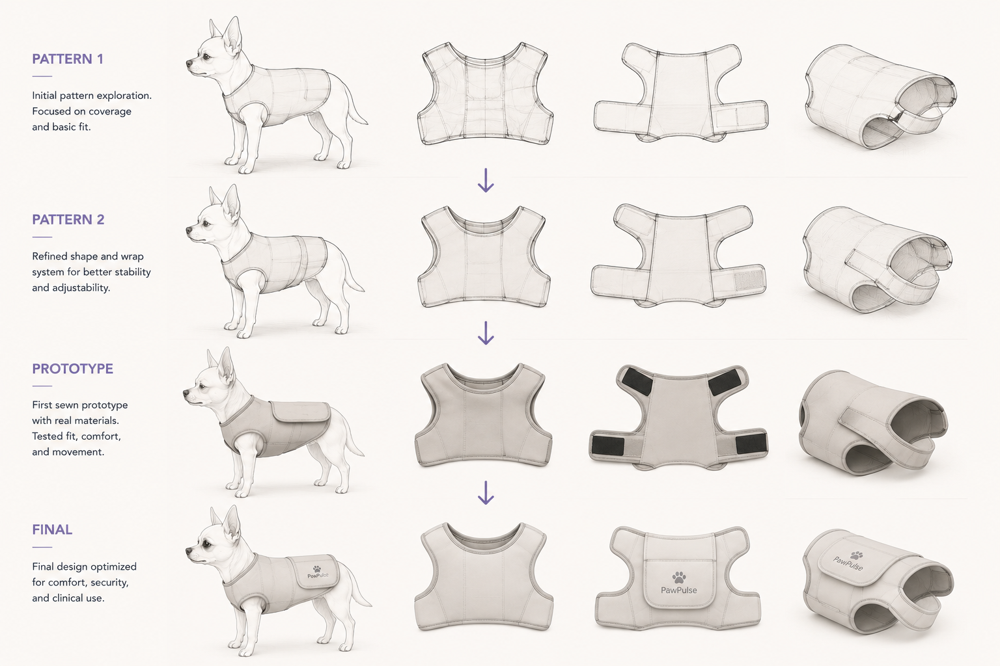
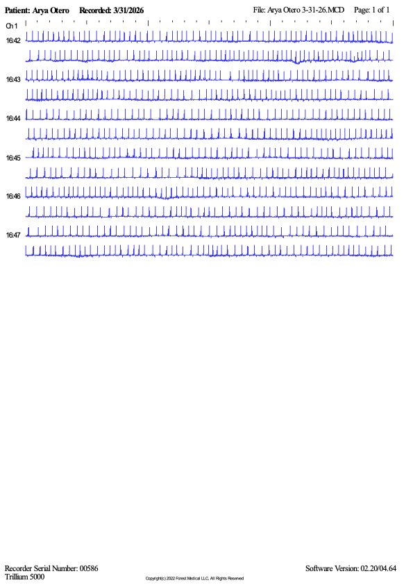

Expert insight
Electrode detachment, inconsistent contact, and movement artifact were recurring concerns in long-term recordings.
Wearable ECG system
A pet-friendly Holter-monitoring system designed to improve comfort, electrode stability, and ECG reliability for small-breed dogs.
PawPulse combines soft-goods design, embedded electronics, and real-world testing in one coordinated wearable system.

The Challenge
Traditional setups often rely on bulky external hardware, exposed leads, and multiple layers to keep everything secure.
On a small body, that added bulk can affect movement, comfort, electrode stability, and signal quality during extended monitoring.

Built around the equipment.
External equipment adds weight and takes up limited space.
Loose leads can shift, pull, or become caught during movement.
Additional wrapping is often needed to keep the system secure.
Movement can interfere with electrode stability and ECG quality.
Designed around the dog.
A lower-profile system reduces unnecessary bulk.
Wiring is protected within the wearable structure.
The vest supports more consistent placement during movement.
The form follows the proportions and movement of small dogs.
Research
An expert interview, workflow observation, precedent analysis, and hands-on testing revealed the same connected issues: fit, movement, wiring, and electrode stability.
Electrode detachment, inconsistent contact, and movement artifact were recurring concerns in long-term recordings.
The process involves skin preparation, electrode placement, wire routing, recorder placement, wrapping, and home management.
Limited body area, bulky hardware, exposed wires, and multiple protective layers make small-dog monitoring more difficult.
The system needed to be lightweight, adjustable, stable, protective, easy to monitor, and capable of reliable ECG recording.
Key insight
Fit, motion, pocket placement, and wire routing directly influence signal reliability, so the wearable and electronics needed to be designed as one system.
System Architecture
Electrodes feed the AD8232 analog front end, while the ESP32 manages acquisition and data handling.
microSD storage preserves the recording locally, a rechargeable battery powers the system, and Bluetooth supports wireless communication.

Wearable Design
An open underside, adjustable wrap, and extended back panel support movement without enclosing the abdomen.
The structure balances fit, compression, electrode positioning, and protection while carrying the recorder away from the skin.

Development Process
Each iteration refined coverage, adjustability, movement, arm openings, pocket placement, and secure fit.

Validation
The final prototype was tested during extended home wear to evaluate fit, movement, device retention, cable stability, and continuous ECG capture.

Technical Contributions
The project required work across design, electronics, fabrication, testing, and communication.
Expert interview, workflow observation, precedent review, and requirements synthesis.
Pattern development, material selection, fit, compression, adjustment, and pocket placement.
ESP32 development, AD8232 ECG acquisition, microSD logging, and status feedback.
Enclosure development, component layout, assembly, soldering, and cable routing.
Bench validation, fit studies, movement observation, home wear, and ECG review.
Identity, visual communication, demo storytelling, technical documentation, and presentation.
Reflection
PawPulse reinforced the importance of treating fit, movement, materials, and electronics as one connected system.
Future development would focus on a smaller enclosed recorder, refined manufacturing patterns, additional body shapes, and formal signal-quality comparison.